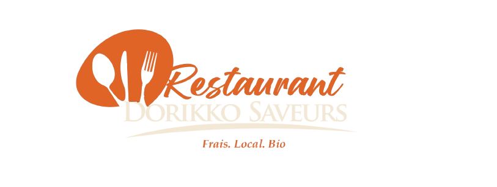

Le feu, les plats, la salle et les visages. Quelques images de ce qui vous attend à la maison.
Suivez le feu au quotidien — @dorikko.saveurs
Les images donnent faim — la réalité est encore meilleure.